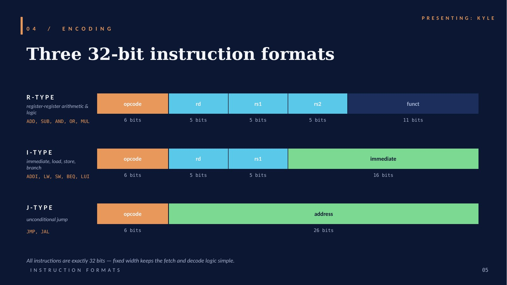
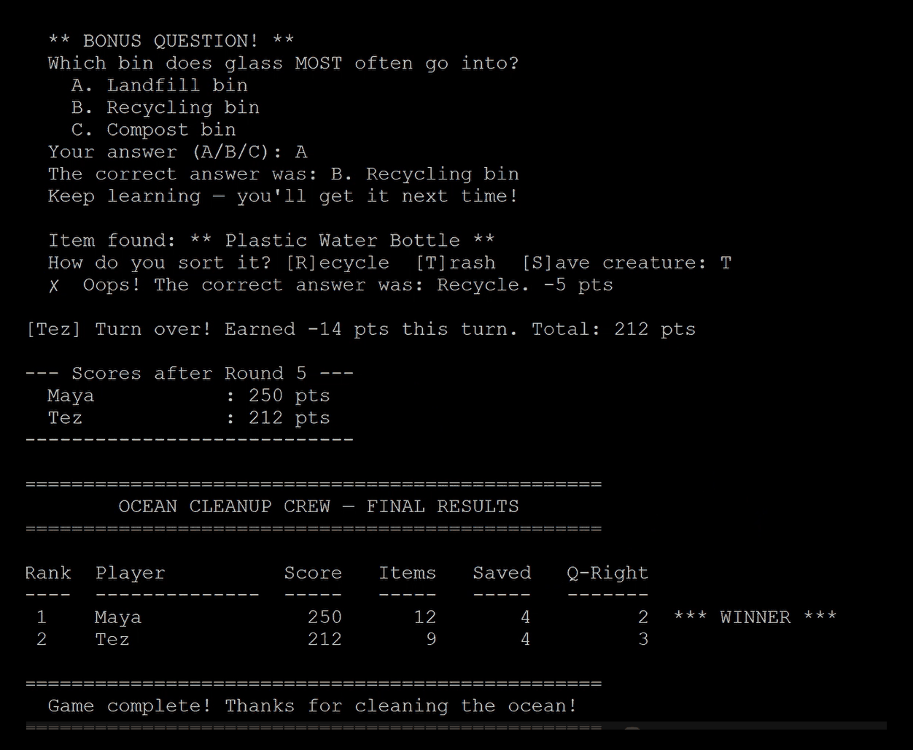
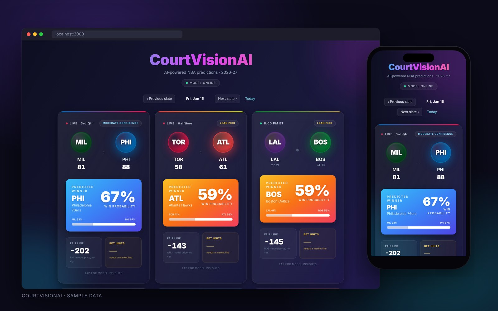

Three projects that took me from hardware to machine learning. For each one: the challenge, my role, the methods I used, and how it turned out.
Computer Architecture (E110) · Team of four · Spring 2026
Hack32: a 32-bit CPU architecture
A 32-bit reimagining of the Hack computer from Nand2Tetris, with 32 registers, three instruction formats, load/store memory, and a hardware multiply instruction.

Hack32’s three instruction formats, from the slide deck I made for our presentation.
Challenge
The original Hack computer has only two registers, 16-bit instructions, and no multiply instruction, so even simple math turns into slow software loops. We had to redesign it as a 32-bit machine while keeping what makes Hack simple to learn.
My role
I created the Hack32 architecture and made the slide deck. In our presentation I covered the ALU examples, load/store memory, and control flow (branches and jumps).
Methods & skills
Computer architecture
Instruction set design
Digital logic
HDL
Python
Slide design & presenting
Outcome
Our design covered every requirement in the project brief, and its hardware multiply is up to about 32× faster than the software multiply loop base Hack relies on. Our professor asked for a copy to share with future classes.
Team
Ethan Silwal, Kyle Lin, and Triston Abrams. We borrowed ideas from RISC-V and MIPS.
An educational game in C that teaches kids ages 7–12 about keeping the ocean clean.

The end of a two-player game: a bonus recycling question, a points penalty for trashing a plastic bottle, and the final leaderboard tracking score, items sorted, creatures saved, and quiz answers.
Challenge
Turn a learning goal, UN Sustainable Development Goal 14 (Life Below Water), into a game that elementary-age kids would actually want to play, written in C.
My role
Solo project. I designed and built the whole game, from turning the learning objective into gameplay to writing it in C.
Methods & skills
C
Game design
Designing for kids
SDG 14
Documentation
Outcome
Submitted with a video walkthrough, an ethics paper, and a self-graded rubric.
Personal project · In progress
CourtVisionAI
A full-stack web app that uses machine learning to predict NBA game outcomes and player props from live data.

CourtVisionAI on desktop and mobile (sample data). Each game card shows the live score, the model’s predicted winner and win probability, a confidence label, and a model-based fair line.
Challenge
Turn raw NBA statistics into game-outcome and player-prop predictions people can read at a glance, with a backend that serves a model and a fast, modern front end.
My role
Solo developer. I designed and built the whole stack, from the data pipeline to the interface.
Methods & skills
Python
Flask
Machine learning
Next.js
REST APIs
UI design
Outcome
In active development. It predicts game winners and player props from live BALLDONTLIE API data, and each game card shows a win probability, a confidence label, and a fair line on both desktop and phone.
Also in progress
Intelligent Systems I (E221). Python and Jupyter labs where I train and evaluate classification models with scikit-learn.
Engineering Ethics (E299). A team case study and class activity on the 2018 Uber self-driving crash in Tempe, Arizona. Read my reflection.
Nand2Tetris. Building a computer from NAND gates up to a working CPU in HDL, the foundation Hack32 was built on.